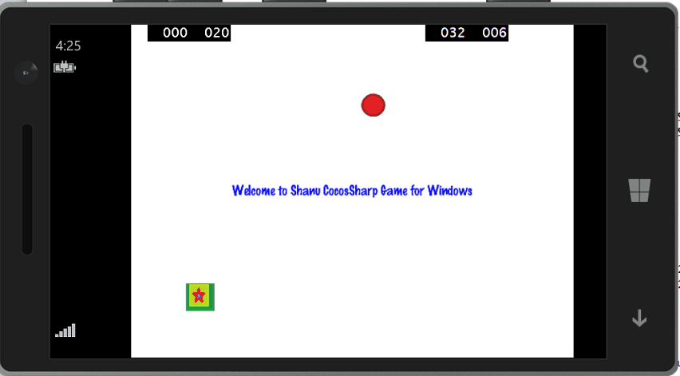
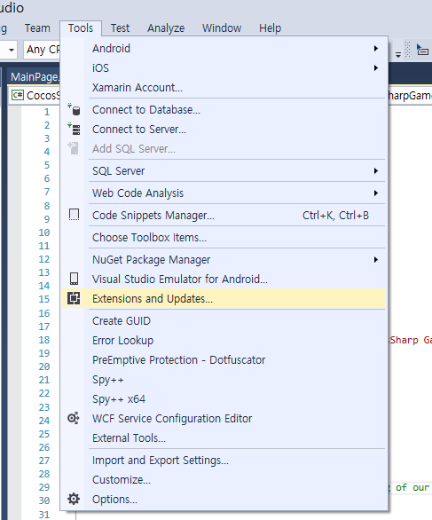
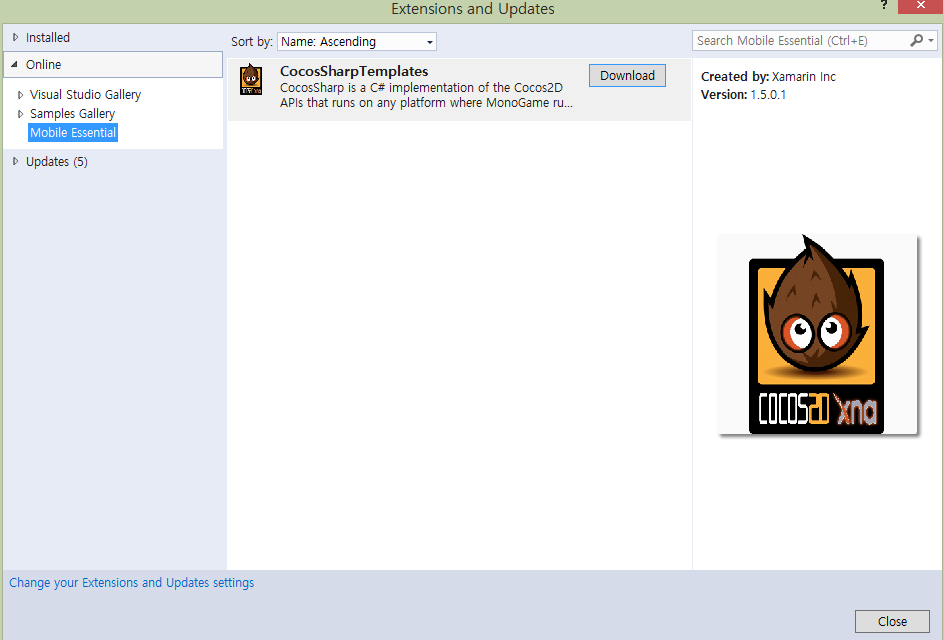
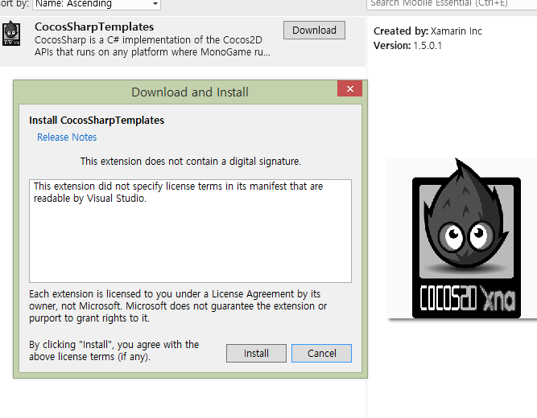
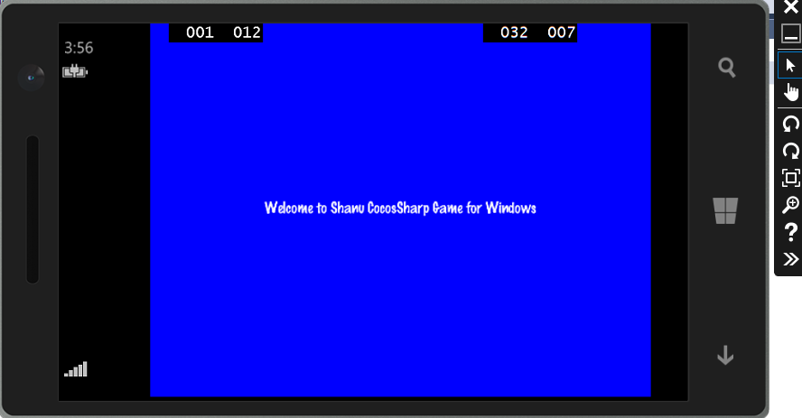
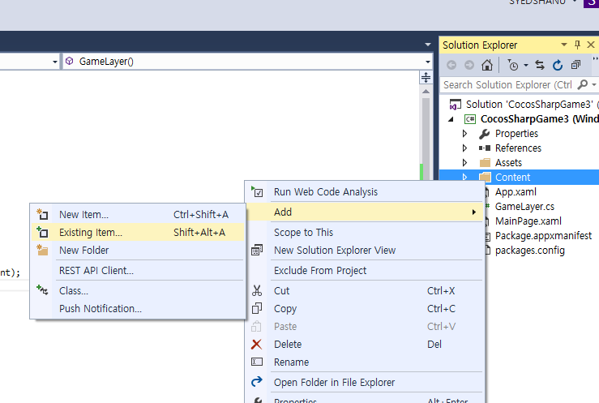
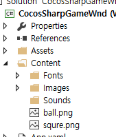
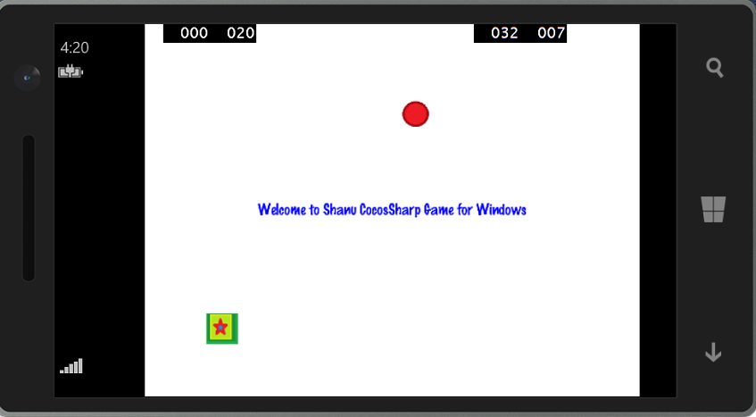

Getting Started With CocosSharp Game Development For Windows Phone
Introduction

In this article let's see about CocosSharp for Windows phone. CocosSharp is a 2D Game engine for C#, F# and .Net developers which is used to develop cross-platform games. For more details check this link.
- Prerequisites and Installation Steps
- Creating first CocosSharp Project for Windows Phone
- First simple Touch and Fun Game program
Building the Sample
Prerequisites and Installation Steps
- Visual Studio 2015: You can download it from here.
- CocosSharp Installation Steps
To add the CocosSharp template in our Visual Studio first we add extensions in tools option.
Open Visual Studio 2015 and at the top from Tools menu select Options.

We can see our Options window has been opened .Click on “Extensions and Updates”. If Mobile Essentioal is not added ,Click on Add and in name we can give as “Mobile Essential” and in URL give the URL as http://gallery.mobileessentials.org/feed.atom . Click ok,

Next step is to download and install CoCosSharp Templates.
Click on Tools and select Extensions and Updates from the menu.

In the Left side select Online > Mobile Essential,

Now we can see CocosSharp Templates click download button.

Install the CocosSharp Templates,

After Installation .Open Visual Studio 2015 and Click on create new project and .select CoCosSharp from the left side templates.Select your CoCosSharp Development as Android, IOS or Windows. In our example we will be using for Wondows Phone.

If Xamarin is not installed install it by fallowing the steps.

Reference Link: https://forums.xamarin.com/discussion/30701/cocossharp-project-templates-for-visual-studio
Description
Creating first CocosSharp Project for Windows Phone
After installing the Visual Studio 2015 and CocosSharp templates, click Start >> Programs >> select Visual Studio 2015 >> Click Visual Studio 2015. Click New >> Project >> select CocosSharp >> Select CocosSharp Game (Windows Phone).

Select your project folder , give your project name and click ok.
Once our project has been created we can see MainPage.Xaml and GameLayer.CS file in the solution explorer.

MainPage.Xaml
By default the main screen name will be Mainpage.xaml.
Here the design page extension will be Extensible Application Markup Language (XAML). If you have worked with WPF then it will be easy to work with Universal Application as in WPF all form file will be as XAML.
GameLayer.CS
GameLayer is the main Class of CocosSharp. The program will be begins from this class and this is similar to our program class in C# Console application.
GameLayer() Method
This class has the contractor method GameLayer().For the layer default back color will be set in the GameLayer() method parameter we can change as per our need. When we create our first application GameLayer() method will be added with a default backcolor and with one lable like below code. This method is similar to ASP.NET page Init Method. Here we can see in the above code one label has been added.
// Define a label variable
CCLabel label;
public GameLayer() : base(CCColor4B.Blue)
{
// create and initialize a Label
label = new CCLabel("Hello CocosSharp", "MarkerFelt", 22, CCLabelFormat.SpriteFont);
// add the label as a child to this Layer
AddChild(label);
}
// Define a label variable CCLabel label; public GameLayer() : base(CCColor4B.Blue) {// create and initialize a Label label = new CCLabel("Hello CocosSharp", "MarkerFelt", 22, CCLabelFormat.SpriteFont); // add the label as a child to this Layer AddChild(label); }
AddedToScene() Method
This class has another override method AddedToScene().In this method we create events for our layer for example we can see by default this method will be initialized an event for OnTouchesEnded mobile phone Touch(in normal emulator it will be used as mouse Click release event),
protected override void AddedToScene()
{
base.AddedToScene();
// Use the bounds to layout the positioning of our drawable assets
var bounds = VisibleBoundsWorldspace;
// position the label on the center of the screen
label.Position = bounds.Center;
// Register for touch events
var touchListener = new CCEventListenerTouchAllAtOnce();
touchListener.OnTouchesEnded = OnTouchesEnded;
AddEventListener(touchListener, this);
}
protectedoverridevoid AddedToScene() { base.AddedToScene(); // Use the bounds to layout the positioning of our drawable assets var bounds = VisibleBoundsWorldspace; // position the label on the center of the screen label.Position = bounds.Center; // Register for touch events var touchListener = new CCEventListenerTouchAllAtOnce(); touchListener.OnTouchesEnded = OnTouchesEnded; AddEventListener(touchListener, this); }
OnTouchesEnded() Event
This event will be triggered whenever someone touch the mobile and take the finger from mobile. This is similar to MouseUp event.
void OnTouchesEnded(List<CCTouch> touches, CCEvent touchEvent)
{
if (touches.Count > 0)
{
// Perform touch handling here
}
}
void OnTouchesEnded(List<CCTouch> touches, CCEvent touchEvent) { if (touches.Count > 0) { // Perform touch handling here } }

Run the Program
Select our Emulator to display our output and click run.

When we run the program we can see the output in emulator.
Here we can see our layer Back color is set as blue and label is displayed in the center of the screen.

First simple Touch and Fun Game program
Now let’s see how to create our simple Touch and Fun Game program by adding images in our layer.
click Start >> Programs >> select Visual Studio 2015 >> Click Visual Studio 2015. Click New >> Project >> select CocosSharp >> Select CocosSharp Game (Windows Phone).
Select your project folder , give your project name and click ok.
Add Images
In this program we will be adding image to our layer and in when user touch the windows phone or clicks on emulator we will move then image upside and down.For this first we will create some image by our self and add the images to our project.
To add image right click on Content folder from solution .Click Add> Select Existing Item >Select your image and add to the content folder.

In our example program we have added two images one as square and one as ball.

For image rendering we will be using CCSprite Class .to know more about CCSprite class check this link.
Adding Images to Layers
First we declare label, CCSprite variable. In this example for the layer we have set the back color as white.
We set the label Color as blue. To add image in our CCSprite class we pass the image name as method parameter. We add the image to the layer and similarly we add two images.
// Define a label variable
CCLabel label;
//Define CCSprite Variable
CCSprite paddleSprite;
CCSprite paddleSpriteball;
//Define boolean variable for image reach to top check
Boolean reachedtop = false;
public GameLayer() : base(CCColor4B.White)
{
// create and initialize a Label
label = new CCLabel("Welcome to Shanu CocosSharp Game for Windows", "MarkerFelt", 22, CCLabelFormat.SpriteFont);
label.Color = CCColor3B.Blue;
// add the label as a child to this Layer
AddChild(label);
paddleSprite = new CCSprite("squre");
paddleSprite.PositionX = 100;
paddleSprite.PositionY = 100;
paddleSpriteball = new CCSprite("ball");
paddleSpriteball.PositionX = 620;
paddleSpriteball.PositionY = 620;
AddChild(paddleSprite);
AddChild(paddleSpriteball);
}
// Define a label variable CCLabel label; //Define CCSprite Variable CCSprite paddleSprite; CCSprite paddleSpriteball; //Define boolean variable for image reach to top check Boolean reachedtop = false; public GameLayer() : base(CCColor4B.White) { // create and initialize a Label label = new CCLabel("Welcome to Shanu CocosSharp Game for Windows", "MarkerFelt", 22, CCLabelFormat.SpriteFont); label.Color = CCColor3B.Blue; // add the label as a child to this Layer AddChild(label); paddleSprite = new CCSprite("squre"); paddleSprite.PositionX = 100; paddleSprite.PositionY = 100; paddleSpriteball = new CCSprite("ball"); paddleSpriteball.PositionX = 620; paddleSpriteball.PositionY = 620; AddChild(paddleSprite); AddChild(paddleSpriteball); }

Now we have added image to our layer and also added welcome text in center of the screen.
Next step is to create an event on Touch to move the image.
Touch Event to Move Image
In touch end event we check for image position and increment the xValue and yValue to move up for one image and decrement the xValue and yValue to move down of another image.Once the image reach to top or bottom we reverse the process for continues image movement of upside and down.
void OnTouchesEnded(List<CCTouch> touches, CCEvent touchEvent)
{
if (touches.Count > 0)
{
// Perform touch handling here
if(paddleSprite.PositionY > 620)
{
reachedtop = true;
}
else if(paddleSprite.PositionY <100)
{
reachedtop = false;
}
if (reachedtop ==false)
{
if (paddleSprite.PositionY >= 80 && paddleSprite.PositionY <= 620)
{
paddleSprite.PositionX = paddleSprite.PositionX + 20;
paddleSprite.PositionY = paddleSprite.PositionX + 20;
paddleSpriteball.PositionX = paddleSpriteball.PositionX - 20;
paddleSpriteball.PositionY = paddleSpriteball.PositionX - 20;
}
}
else
{
paddleSprite.PositionX = paddleSprite.PositionX - 20;
paddleSprite.PositionY = paddleSprite.PositionX - 20;
paddleSpriteball.PositionX = paddleSpriteball.PositionX + 20;
paddleSpriteball.PositionY = paddleSpriteball.PositionX + 20;
}
}
}
void OnTouchesEnded(List<CCTouch> touches, CCEvent touchEvent) { if (touches.Count > 0) { // Perform touch handling here if(paddleSprite.PositionY > 620) { reachedtop = true; } else if(paddleSprite.PositionY <100) { reachedtop = false; } if (reachedtop ==false) { if (paddleSprite.PositionY >= 80 && paddleSprite.PositionY <= 620) { paddleSprite.PositionX = paddleSprite.PositionX + 20; paddleSprite.PositionY = paddleSprite.PositionX + 20; paddleSpriteball.PositionX = paddleSpriteball.PositionX - 20; paddleSpriteball.PositionY = paddleSpriteball.PositionX - 20; } } else { paddleSprite.PositionX = paddleSprite.PositionX - 20; paddleSprite.PositionY = paddleSprite.PositionX - 20; paddleSpriteball.PositionX = paddleSpriteball.PositionX + 20; paddleSpriteball.PositionY = paddleSpriteball.PositionX + 20; } } }
When we run the program in emulator or in windows phone we can see the output like below image.
Source Code Files
- CocosSharpGameWnd.zip.
More Information
Download all the Prerequisites and fallow the Installation Steps to intall.